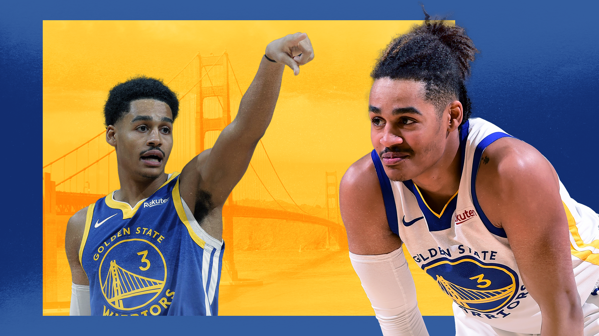

Could Jordan Poole be the key to Golden State’s success?
Sean Carroll illustration
O n 24 October 2019, Jordan Poole made his debut for the Golden State Warriors. The team lost to the LA Clippers by 19 points and Poole finished with five points on 2-13 shooting.
It was also the night that Patrick Beverley told Steph Curry that “you (Curry) had the last five years, the next five are mine”. But that’s a story for another article.
I remember watching that game, grasping at straws, saying that the Warriors were integrating so many new pieces: D’Angelo Russell, Glenn Robinson and Eric Paschall among others, of course it wasn’t going to start off swimmingly. Plus, Jordan Poole finished the night +10, that’s a positive takeaway.
Little did I know, there wouldn’t be many more positive takeaways for the rest of the season.
A few games later, Aron Baynes landed awkwardly after taking a charge , breaking Steph’s hand, Kevon Looney was dealing with a weird nerve condition in his hip and Draymond Green tested his skills in media for much of the season.
Poole finished that year averaging 8.8 points a night while shooting 33 percent from the floor and 28 percent from behind the arc. He was playing 22 minutes a night on one of the worst teams in the league and he looked like a boy amongst men.
Fast forward through that season and the next, and Poole is on the sidelines as one of the established players watching on. Fresh off an incredibly hot stint at the CrawsOver Pro-Am league in Seattle, untucked jersey and all, Poole is no longer the Swaggy Poole who hit that game winner for Michigan.
Not only is he part of the permanent team with a solidified role moving forwards, he’s the most important player not named Steph, Klay or Draymond.
-
After spending time in the G League Bubble (the Gubble, if you will) in 2021, Poole came back a completely different player. He re-joined the main team on 4 March in a game against the eventual Western Conference Champion Phoenix Suns where he had 26 points on 16 field goal attempts.
In the 36 remaining games after the Gubble, Poole averaged 14.7 points, 2.4 assists and shot 35 percent from behind the arc. He hit 67 percent of his attempts at the rim and lead the league in corner three-point shooting according to Cleaning the Glass, nailing 65 percent of them.
He had grown into the prototypical scoring combo guard; he was playing like a new-age Jamal Crawford or future-age Bones Hyland. Except instead of dribbling around, hunting for a shot for 20 seconds, nearly three quarters of all his makes were assisted on.
Poole was also creating shots for himself in the flow of the offence, and it was beautiful to watch.
Better yet, he had one of the greatest point guards of all time in Stephen Curry getting him the ball. If Steph was swamped by the defence, the league’s best pressure valve, Draymond Green, was right there to swing it around to Poole on the opposite side of the court.
Using NBA.com’s tracking data 62.2 percent of his shot attempts were either ‘open’ or ‘very open’ after the Gubble. The most promising component of those numbers is that Poole shot better, both from three and two-point range, when a defender was ‘tight’ on him, within two to four feet.
It was an embarrassment of riches for the young guard. These were the shooting splits of an elite shot-maker who just happened to be handed baskets on a platter.
Now, the analogy of a basket on a platter has some strange visuals, but the best way to describe it was the one he had to tie the game against the LA Lakers in the play-in game:
This isn’t the latest project in Steve Kerr’s ‘Kumbaya’ system (a phrase I am extremely excited to start calling ‘Kum-min-gah System’), this was Kerr playing one of his best players in a crucial moment and prepared for him to take the final shot.
Poole finished with only ten points in the play-in game with just three of those coming in the second half. It was a disappointing second half of play after "poking the bear". It was Poole’s first opportunity to play in a meaningful game and he was outclassed by LeBron James and Anthony Davis.
But that’s just it, it was his first meaningful game of his career. There are plenty more to come.
-
Entering the 2021-22 season, the Golden State Warriors are in an excellent position. Klay Thompson will be returning to the court after two years of major leg injuries, the team added Jonathan Kuminga and Moses Moody in the draft as well as Otto Porter and Nemanja Bjelica in free agency.
There was no superstar trade, Bradley Beal or Damian Lillard aren’t wearing a Warriors jersey.
It won’t attract as many headlines, but a lot of the shots that would otherwise be funnelled to [third star] will end up in Poole’s hands. Steve Kerr trusts Poole, he trusts him coming off the bench and maybe next season, he’ll trust him starting on the wing.
We all know how passive Andrew Wiggins can be out there. As an example, when I just wrote that Poole could start, you just thought of Steph, Poole, Thompson, Green and Looney. Wiggins didn’t cross your mind.
If he doesn’t make the starting lineup, then Poole will flex between competent ball-handler on the second unit or off-ball scorer with Andre Iguodala finding him.
Kerr always likes to stagger his superstars. In the Kevin Durant era, he’d play Klay and KD when Steph and Draymond sat and vice versa. Assuming he wants to keep Steph with Draymond so they can come in at a similar time in the fourth, we could see a few strong starts to the second quarter from Klay and Poole.
To close the game, the Death Lineup might be revived with the return of Iguodala, but if it isn’t, this past season, Kerr wasn’t afraid to throw Wiggins or Kelly Oubre Jr. down at the four and out-run teams.
Next season, if Iguodala or Wiggins can hold up in that spot, there’s a wing spot to be taken next to Steph and Klay. It has Jordan’s name all over it.
But even before then, if Klay’s timeline sees him return to the court around Christmastime, Poole can slot in as the scoring two on opening night.
All these factors: supreme confidence from his coach, a starting and closing spot up for grabs, the elite shooting inside and out and the need to redeem himself after losing to the Lakers lead to me saying Poole will be the 2021-22 Most Improved Player.